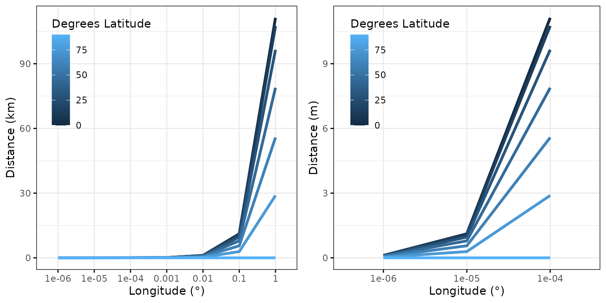

Dealing with flight data
rnp_flight_data_add_flight_metadata.RmdOverview
The goal of this vignette is to illustrate the process behind the
functions rnp_flight_data and
add_flight_metadata of the throne package.
These two functions will allow the processing a raw .tif
file obtained by combining images gathered during the flight itself into
a data structure easily manageable with R (i.e., a tibble) that will
later be related with operative temperature model (OTM)
data to finally predict predict thermal landscapes.
NOTE: To go further or to clarify any issues, throughout this vignette, we provie links to additional resources or complementary information.
Reading and processing flight data
The rnp_flight_data function (i.e.,
read and process
flight data) uses the functionality developed by packages such as raster,
sf or terra
to transform a .tif file into a data frame like
R data structure (a tibble). Below we detail
the functions inputs, processing and output.
Inputs
The rnp_flight_data takes in 2 inputs:
-
file_path: The path to the folder where the.tiffile is stored. -
digits: The number of decimal digits to which the final output should be summarized to.
The argument digits determines the number of decimal
digit places to which latitude and longitude information should be
rounded to. This argument will therefore determine the spatial
resolution of your final measurement as different latitude and longitude
decimal digits correspond to different distances. As a generalization, 1
degree of latitude can be approximated to 111.32 km, a relationship that
can be extended to decimal digits as seen below.

In contrast, due to the curvature of the Earth the distance
represented by a longitude degree is also dependent on latitude. You can
find more information on how to transform degrees longitude into
distances here.
Furthermore, the proxistat
Rpackage provides helpful functions to transform coordinate
systems into measurable distances. Below we use proxistat
functions to illustrate how latitude influences the distance represented
by a longitudinal degree.

Based on the above, in the majority of cases, we recommend
setting the argument digits = 5. This will provide
a spatial resolution of ~ 1.2 \(m^2\)
at the equator which will gradually descend to as little as ~ 0.5 \(m^2\) at 66° Latitude as seen below.
This spatial resolution guarantees that the original
.tif file is processed at a scale that is relevant for the
majority of study organisms for which this package is intended. However,
we leave this decision up to the user to consider the spatial scale that
is most relevant for their organism. In the image below (figure S1 in
the accompanying paper), we illustrate the same flight processed when
the argument digits is set to 4, 5 and 6 respectively.

image
, In order to transform the original .tif file, the
rnp_flight_data goes through the following general
steps:
Read the
.tiffile as a as a raster object using therasterfunction from therasterpackage.Transform the raster into a data frame via the
rasterToPointsfunction also from therasterpackage. The resulting data frame will have longitude, latitude and reflected temperature (i.e., the temperature measured by the drone) and as many rows as combinations of unique longitude and latitude values your initial.tiffile had. Each combination corresponds to a “tile” within your area of study and the area of this “tile” will be determined by the number of decimal digits of your latitude and longitude measurements as presented earlier.Project the coordinates of the newly created data frame from a Universal Transverse Mercator(UTM) coordinate system to a more easy to interpret World Geodetic System(WGS84) coordinate system (i.e., from a system based in UTM zones to the widely used decimal latitude and longitude degrees), using the
projectfunction of theterrapackage.Round the number of decimal digits on all latitude and longitude observations according to the
digitsargument.Average the reflected temperature across all observations with the same averaged latitude and longitude.
Output
The final output is a tibble object with columns for
latitude, longitude and reflected temperature (ref_temp).
The number of rows of this data set will vary depending on the area
covered by the flight and the number of digits specified.
For instance, our study area was ~ 2900 \(m^2\), which processed setting
digits = 5 led to a tibble of 7813
observations each representing a “tile” of approximately 0.4 \(m^2\) at a latitude of approximately
40°.
## # A tibble: 7,813 × 3
## latitude longitude ref_temp
## <dbl> <dbl> <dbl>
## 1 39.9 -120. 15.6
## 2 39.9 -120. 16.5
## 3 39.9 -120. 18.5
## 4 39.9 -120. 17.0
## 5 39.9 -120. 16.6
## 6 39.9 -120. 16.6
## 7 39.9 -120. 17.6
## 8 39.9 -120. 17.0
## 9 39.9 -120. 17.2
## 10 39.9 -120. 15.5
## # ℹ 7,803 more rowsOnce the raw .tif file is processed, the resulting
tibble can already be used to quantify the thermal
characteristics of a study site from a spatially discrete perspective.
To illustrate this, below we plot 4 of the 34 fully processed flights
(with digits = 5) over the same area we offer in the
throne package as example data. Panel titles indicate the
hour in which the flight took place
Adding flight metadata
The add_flight_metadta function adds information about
the flight to the processed flight data outputted from the
rnp_flight_data function. Below we detail the function’s
inputs, processing and output.
Inputs
The add_flight_data function takes in 3 inputs:
-
flight_data: A processed flight datatibbleobtained using thernp_flight_datafunction. -
flight_metadata: A flight metadata file -
flight_id: An identification (ID) for the flight present in the metadata file.
The documentation for the throne package includes an
example flight metadata flight that includes information on when did the
flight took place see below:
## flight_id gcps date time_start time_end
## 1 VAL2_01 N 8/24/2023 8:35 8:39
## 2 VAL2_02 N 8/24/2023 8:59 9:03
## 3 VAL2_03 N 8/24/2023 9:19 9:23
## 4 VAL2_04 N 8/24/2023 9:42 9:46
## 5 VAL2_05 N 8/24/2023 10:06 10:10
## 6 VAL2_06 N 8/24/2023 10:38 10:42Our example file includes an flight_id column and
columns for the date when the flight took place as well as
the time of the day when the flight started (HH:MM format,
time_start) and the time of the day when the flight ended
(time_end). Additionally, our data set includes information
on whether ground control points (GCPs, see
gcps column) where used when processing the flight.
Metadata files can include additional information like the height at
which the drone flew during the flight, overall weather conditions etc.
if the user wants to consider them for any analysis.
NOTE: It is important that the
flight_id,date,time_startandtime_endcolumns in a metadata file are formatted like in the example file above for theadd_flight_metadatafunction to work correctly.
Processing
In order to add the metadata specific to the flight being processed,
the add_flight_metadata function goes through the following
general steps.
- Extract the metadata for the desired flight (specified via
fligt_id) - Using tools from the
lubridatepackage, extract the year and Julian date (i.e., day of the year) when the flight took place. - Transform the
time_startandtime_endcolumns to minutes of the day columns. - Bind the flight’s metadata to the processed flight data.
NOTE: We choose to use Julian dates and minutes of the day to simplify the management of the data as much as possible. Date and time data have unique data formats in the
Renvironment that are often difficult to handle for users and that might lead to unintended errors. By using Julian dates and minutes of the day, we deal only with integer columns, much easier to operate with and manipulate. Further, these formats can be easily transformed back into more easily interpretable scales for visualization purposes, by using theas.Datefunction to transform Julian dates back into a YYYY-MM-DD format and dividing by 60 for minutes of the day to get hours.
Output
The final output is the same as with the rnp_flight_data
function adding columns for year, date,
minute_start and minute_end.
## # A tibble: 7,813 × 8
## flight_id latitude longitude ref_temp year date minute_start minute_end
## <chr> <dbl> <dbl> <dbl> <dbl> <dbl> <dbl> <dbl>
## 1 VAL02_GCP_01 39.9 -120. 15.6 2023 235 515 519
## 2 VAL02_GCP_01 39.9 -120. 16.5 2023 235 515 519
## 3 VAL02_GCP_01 39.9 -120. 18.5 2023 235 515 519
## 4 VAL02_GCP_01 39.9 -120. 17.0 2023 235 515 519
## 5 VAL02_GCP_01 39.9 -120. 16.6 2023 235 515 519
## 6 VAL02_GCP_01 39.9 -120. 16.6 2023 235 515 519
## 7 VAL02_GCP_01 39.9 -120. 17.6 2023 235 515 519
## 8 VAL02_GCP_01 39.9 -120. 17.0 2023 235 515 519
## 9 VAL02_GCP_01 39.9 -120. 17.2 2023 235 515 519
## 10 VAL02_GCP_01 39.9 -120. 15.5 2023 235 515 519
## # ℹ 7,803 more rowsIntegrated processing for multiple flights
Both of the functions presented above work for a single flight, nonetheless, in the majority of occasions, users will probably have multiple flights to process. Below, we provide some example code on how to precisely do that via a loop.
# read the flights metadata file for all flgihts
flights_metadata <- read.csv("~/flights_metadata.csv") # specify your own folder here
# define the folder where the .tif files are stored and list those files
folder <- "~/flights_raw_data" # specify your own folder here
flight_files_list <- paste(folder, "/", list.files(folder), sep = "")
# generate a dataset to store the flights data
flights_data <- data.frame(latitude = c(), longitude = c(), ref_temp = c(),
year = c(), date = c(), minute_start = c(), minute_end = c())
# loop through all flight files
for(i in 1:length(flight_files_list)){
# read and process flight data for first flight
flight <- rnp_flight_data(file_path = flight_files_list[i], digits = 5)
# add flight metadata, use the list of files to specify the file ID
flight <- add_flight_metadata(flight_data = flight,
flight_id = str_sub(list.files(folder)[i], end = -5),
flight_metadata = flights_metadata)
# bind to holder data set
flights_data <- rbind(flights_data, flight)
}
# save the flights dataset
save(flights_data, file = "~/flights_data.RData") # specify your own folder hereNOTE: The code above will take a substantial amount of time to run. The number of flights, the area covered in each flight and the number of decimal digits at which the flight data is being processed will determine the run time. Nonetheless, if everything is implemented correctly, flights will only need to processed once!.
For the final output, we do not include the flight_id as
it is redundant information given that no two flights can happen at the
same time. After implementing the code above on the 34 flights flown
over 2 days provided in the throne package, we obtain a
data set of 262803 observations.
## # A tibble: 262,803 × 7
## latitude longitude ref_temp year date minute_start minute_end
## <dbl> <dbl> <dbl> <dbl> <dbl> <dbl> <dbl>
## 1 39.9 -120. 15.6 2023 235 515 519
## 2 39.9 -120. 16.5 2023 235 515 519
## 3 39.9 -120. 18.5 2023 235 515 519
## 4 39.9 -120. 17.0 2023 235 515 519
## 5 39.9 -120. 16.6 2023 235 515 519
## 6 39.9 -120. 16.6 2023 235 515 519
## 7 39.9 -120. 17.6 2023 235 515 519
## 8 39.9 -120. 17.0 2023 235 515 519
## 9 39.9 -120. 17.2 2023 235 515 519
## 10 39.9 -120. 15.5 2023 235 515 519
## # ℹ 262,793 more rows